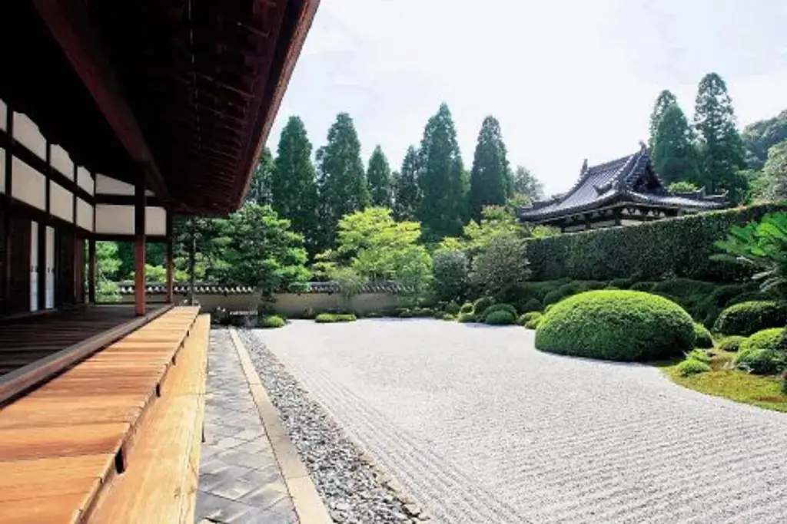
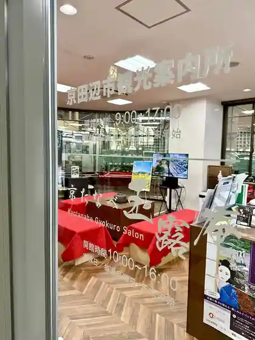
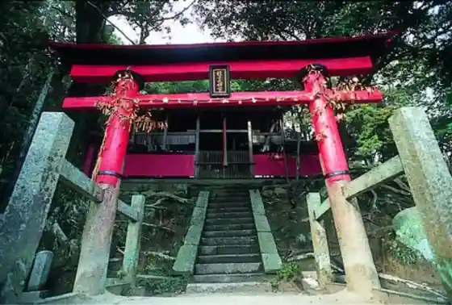
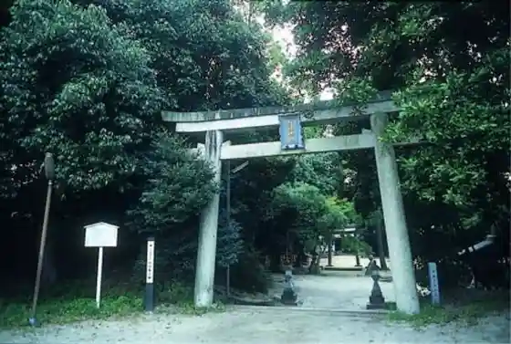

Japan / Kyoto / Kyotanabe
Kyotanabe, Kyoto: things to do, food and stays
Kyotanabe · Kyoto
Kyotanabe
Highlighted on the Kyoto map.

Explore Kyotanabe, Kyoto: things to do, food and stays
Sights
Shuon Iori Ikkyu Tera
Kyotanabe, Kyoto · 0774-62-0193
Kyo Tanabe Gyokuro Iori
Kyotanabe, Kyoto · 0774-68-2801
Ippan Shadanhojin Kyotanabe Tourism Association
Kyotanabe, Kyoto · 0774-68-2801

Hakusan Shrine
Kyotanabe, Kyoto

Tsukuyomi Shrine
Kyotanabe, Kyoto

Kannabi Yama
Kyotanabe, Kyoto · 0774-68-2801
Hisashi Takara Tera
Kyotanabe, Kyoto · 0774-65-3422
Fugen Tera Fureai no Eki
Kyotanabe, Kyoto · 0774-62-4250
Dai Mido Kan'onji
Kyotanabe, Kyoto · 0774-62-0668
Sa Kiba Shrine
Kyotanabe, Kyoto
Sawai Ie House
Kyotanabe, Kyoto · 080-3810-1837
Saku Oka Shrine (Iioka)
Kyotanabe, Kyoto
WOOD DESIGN PARK Kyoto - Sai -
Kyotanabe, Kyoto
Iioka Kofun Gun
Kyotanabe, Kyoto
Shuchi Shrine
Kyotanabe, Kyoto · 0774-65-0315
Osumi Kurumazuka Burial Mound
Kyotanabe, Kyoto
Sakaya Shrine
Kyotanabe, Kyoto
Ten Shrine
Kyotanabe, Kyoto
Suga Shrine
Kyotanabe, Kyoto
Tanakura Mago Shrine
Kyotanabe, Kyoto · 0774-62-2460